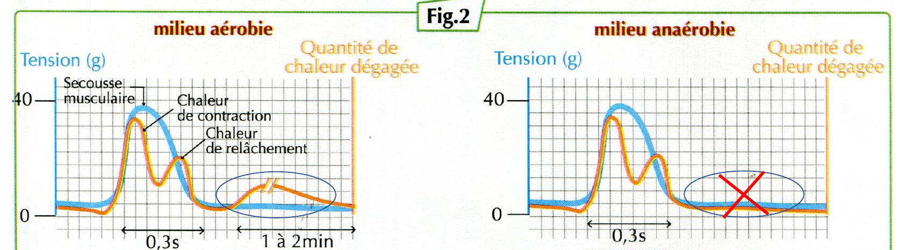

Les phénomènes thermiques accompagnant l’activité musculaire
L’activité musculaire s’accompagne d’autres phénomènes, principalement thermiques et métaboliques, permettant la production de l’énergie.
Pour mettre en évidence ces phénomènes, on propose les données suivantes :
Des mesures du dégagement de chaleur par un muscle isolé ont été réalisées en milieu riche en oxygène (milieu aérobie) et en milieu pauvre en oxygène (milieu anaérobie). Les résultats sont représentés sur les graphiques de la figure 2.
1. Observer et comparer les résultats
La figure 2 représente les différents types de chaleur dégagée par le muscle lors d’une secousse, dans les deux milieux.

Question 1 — Quels types de chaleur accompagnent la secousse musculaire dans le milieu aérobie ? Précisez leurs caractéristiques.
Question 2 — Que constate-t-on dans le milieu anaérobie ?
2. Interpréter les observations
Question 3 — Que montre l’absence de chaleur retardée dans le milieu anaérobie ?
Question 4 — Que montre la persistance de la chaleur initiale dans les deux milieux ?
3. Construire la conclusion
Question 5 — Quels sont les quatre phénomènes qui accompagnent l’activité musculaire ?
École SVT — Activité 2, phénomènes thermiques accompagnant l’activité musculaire.